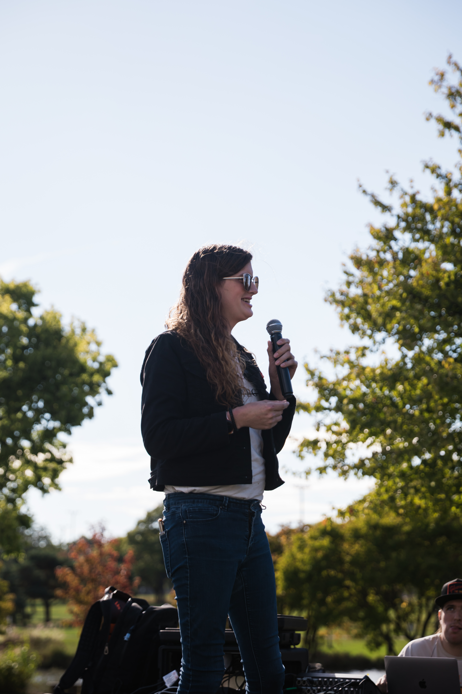

01 / KEYNOTE
Grassroots Organizing in Rural Communities
Building durable coalitions, neighbor-to-neighbor trust, and lasting civic infrastructure outside major metro areas.
Writer • Speaker • Consultant • Community Advocate

Bridging working-class grit, frontline operational leadership, and rural civic advocacy.
Raised in a working-class manufacturing family of machinists, welders, and metal workers in the rural heartland, Zoey Carter learned the value of practical, hands-on stewardship early on. The first high school graduate in her family, she spent seventeen years in retail management—leading high-volume grocery and technology retail operations—before returning to higher education to pursue a degree in Public Policy at Arizona State University.
In November 2023, she founded the Rural Equality Project, where she serves as Executive Director, advancing community outreach, equity, and durable civic engagement across rural communities.
In 2025, Zoey was selected as one of eight Victory Empowerment Fellows nationwide by the LGBTQ+ Victory Institute. Her public service and political leadership also include serving as Campaign Manager for Nicole Dopler’s state representative campaign (2026), alongside cohort participation in She Should Run (Fall 2026) and the Dave Tebben Leadership Academy.